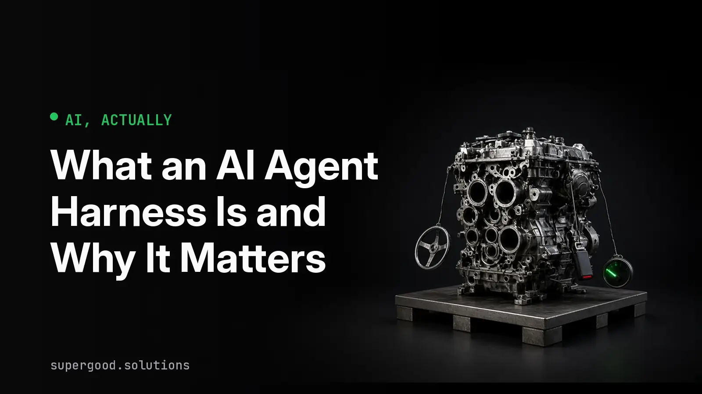

What an AI Agent Harness Is and Why It Matters
TL;DR: An AI agent is a language model plus a pile of ordinary software wrapped around it, and that wrapper is called the harness. If you are buying or approving an AI system, most of what you care about (reliability, cost, safety, the freedom to switch vendors) lives in the harness, not the model.
Key Insight
Think of a car. The language model is the engine: it produces the power, and it is the part everyone names when they talk about a car. The harness is everything else. The steering, the brakes, the fuel gauge, the seat belts, and the dashboard that tells you what is happening.
Nobody would call an engine bolted to a frame a car. It cannot be steered, it cannot be stopped safely, and you cannot tell how much fuel is left. A bare language model has the same problem. It reads text and writes text, and that is all it does. It cannot open a file, check a database, or remember yesterday's conversation unless something around it makes that possible.
That something is the harness. Latent Space defines it as "everything besides the model weights that makes the agent work": the environment, tools, context and guardrails that surround the model. Weights are the learned numbers inside the model, so "besides the weights" means "all the normal software." The same writeup breaks the job into four parts. The harness lets the model perceive (it assembles the context, meaning the text the model gets to read on each turn), act (it offers tools, meaning actions like searching or sending an email), persist information (it handles memory and compaction, which is trimming old conversation so it still fits), and enforce boundaries (permissions and guardrails, meaning rules about what the agent may and may not do).
Add one more piece. A harness runs the loop. It calls the model, looks at what the model asked for, runs the tool, feeds the result back, and repeats until the job is done. Anthropic draws the line between workflows, where code decides the steps, and agents, where the model decides its own steps and tool use. Either way, the loop and the rules around it are the harness.
Why Teams Miss This
Buyers compare models. Vendor pages, leaderboards and press coverage are all about which model is smartest, so the model becomes the thing you evaluate and the harness becomes an afterthought.
That framing hides where the failures come from. Latent Space makes the point with a piece of arithmetic: an agent that is right 95% of the time on each step finishes a 20-step task correctly only about 36% of the time. A model's step-level accuracy is one input. How the harness limits steps, checks results and recovers from a bad one decides the rest. The same piece recounts how early autonomous agents in spring 2023 handed brittle models full control and failed, and how a test by Answer.AI of an early version of the Devin coding agent showed roughly a 15% success rate on the tasks they tried. Those were harness decisions about how much freedom to grant, as much as model limits.
The second miss is timing. In an earlier post, The Free Model Upgrade Won't Save Your AI Strategy, we quoted Drew Breunig on how teams skipped harness and context work because a new model would arrive and paper over the problems. When models stop getting cheaper and better on that schedule, the harness is where the neglected work shows up.
How to Actually Do It
You do not need to read code to ask good harness questions. Put these to any vendor or internal team before you approve an agent.
- What exactly does the model see on each turn? Ask for a real example of the assembled context, not the template. Cost and quality both follow from it. Our post on context discipline covers why this is the cheapest thing to fix.
- What tools can it use, and what stops it from using the wrong one? A good answer names specific permissions, such as read-only access by default and a human approval step before anything is sent, paid or deleted.
- How does it remember, and what happens when memory is wrong? Persistent memory helps, and it is also a place for bad information to hide.
- How do you know it worked? Look for checks on the output and a test suite that scores the whole agent, not only the model. Our posts on why agent evals mislead and where the eval system is the real problem explain what to look for.
- Can we swap the model without rebuilding everything? If the answer is no, your vendor owns your options. If the harness keeps tools, memory, permissions and tests separate from the model, a model change becomes a configuration change and a re-run of the tests.
A useful test is to ask one team to run the same model through two different harnesses on the same ten real tasks. If the results differ a lot, you have just measured the harness.
What We've Learned
Anthropic's own guidance on building agents is to find the simplest solution that works and to treat extra complexity as something to justify. It also warns that frameworks can hide the prompts and responses underneath, which makes problems harder to debug. That advice applies on the buying side too: prefer a harness your team can inspect.
The experiment worth running this month is the five-question review above on your single most important agent. Write down which answers you could not get. Those gaps are your real risk, and none of them will be closed by a better model.
Sources
- Definition and four-part breakdown of the harness: The Evolution of the Agent Harness, Latent Space
- Workflows versus agents, and the advice to start simple: Building effective AI agents, Anthropic
- Early Devin test referenced by Latent Space: Thoughts On A Month With Devin, Answer.AI
- Commentary on skipping harness work: Fable and the end of the free lunch, Drew Breunig
- Our earlier post: The Free Model Upgrade Won't Save Your AI Strategy, Supergood Solutions
Have a specific workflow in mind?
Bring it to a Quick Scan — a live working session where we'll tell you honestly whether it should be an agent, a workflow, or left alone, before you spend a dollar building it. You get 3 prioritized recommendations on the call, a one-page summary after, and the $500 credited toward any engagement within 30 days.
Get new posts + practical agent-ops notes
One email when something new goes up. No nurture sequence, no spam — unsubscribe whenever you want.